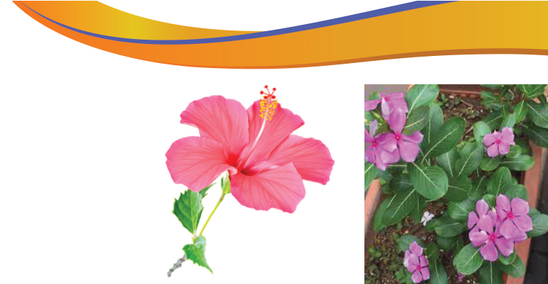
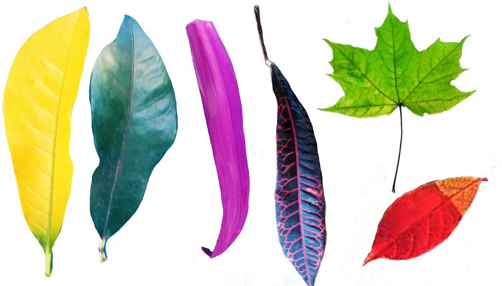

Materials needed for creating colours from flowers
The following are materials needed for extracting colours from flowers:
- (a) Flowers with strong or bright petals,
- (b) Small bowls or containers (one for each colour) that you don’t use in the kitchen,
- (c) Glue (wood glue),
- (d) Wooden spoon for stirring,
- (e) A painting brush, and
- (f) Painting papers ideally watercolour.